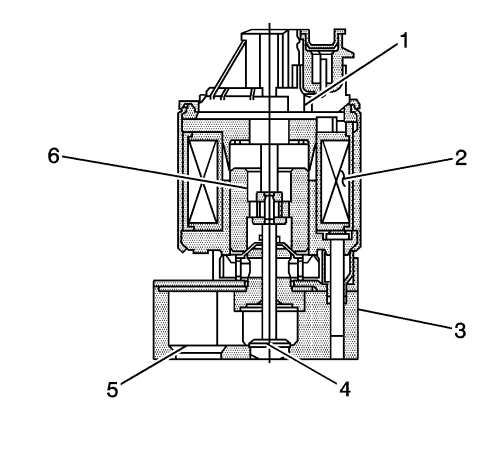

Descripción del Sistema de Recirculación de Gases de Escape (EGR)
El sistema de recirculación de gases de escape (EGR) se utiliza para reducir la cantidad de niveles de emisiones de óxido de nitrógeno debidos a las temperaturas de combustión que superan los 816 °C (1.500 °F). Lo lleva a cabo introduciendo de vuelta pequeñas cantidades de gas de escape en la cámara de combustión. El gas de escape absorbe una porción de la energía térmica producida por el proceso de combustión y, de este modo, reduce la temperatura de combustión. El sistema EGR sólo funcionará bajo unas condiciones de carga del motor, presión barométrica y temperatura determinadas con el fin de evitar problemas de conducción y aumentar el rendimiento del motor. El módulo de control del motor (ECM) calcula la cantidad de EGR requerida en función de las siguientes entradas:
| • | El sensor de temperatura del refrigerante del motor (ECT). |
| • | El sensor de la temperatura de aire de entrada (IAT) |
| • | La Presión barométrica (BARO) |
| • | El sensor de presión absoluta de colector (MAP) |
| • | Sensor de posición del acelerador |
Circuitos de válvula EGR
Válvula EGR lineal

|
|---|
| (1) | Sensor de posición |
| (2) | Conjunto de bobina |
| (3) | Batalla |
| (4) | Tetón |
| (5) | Escape en la tubuladura |
| (6) | Inducido |
La válvula de recirculación de gases de escape (EGR) consta de los siguientes circuitos:
| • | Un circuito de tensión de encendido que suministra 12 V a la bobina de la válvula EGR |
| • | Dos circuitos de control que conecta la bobina de la válvula EGR a masa. El circuito de control es una masa con modulación por ancho de pulso producida por un conductor lateral inferior interno del módulo de control del motor (ECM). |
| • | Un circuito de referencia de 5 V suministrado desde el ECM hasta el sensor de posición interno de la válvula EGR |
| • | Un circuito de señal que envía una tensión de retroalimentación desde el sensor de posición interno de la válvula EGR hasta el ECM. Esta tensión varía en función de la posición del tetón de la válvula EGR. El ECM interpreta esta tensión como la posición del tetón de la válvula EGR |
| • | Un circuito de referencia baja suministrado desde el ECM hasta el sensor de posición interno de la válvula EGR |
Diagnóstico del EGR
El módulo de control del motor (ECM) comprueba el flujo de recirculación de gases de escape (EGR) durante la deceleración abriendo momentáneamente la válvula EGR mientras supervisa la señal del sensor de presión absoluta del colector (MAP). Cuando la válvula EGR se abre, el ECM espera ver un aumento predeterminado de MAP. Si no se detecta el aumento esperado de MAP, el ECM registrará la cantidad de diferencia de MAP detectada y ajustará un contador de fallos calibrado a un nivel límite de fallos calibrado. Cuando el contador de fallos supere el nivel límite de fallos, el ECM activará un DTC.
Normalmente, el ECM sólo permitirá un recuento de prueba del flujo de EGR durante un ciclo de encendido. Para ayudar a verificar una reparación, el ECM permite 12 recuentos de prueba del flujo EGR durante el primer ciclo de encendido después de un borrado de código o una desconexión de batería. Deberían bastar entre 9 y 12 recuentos de prueba del flujo de EGR al ECM para determinar el flujo de EGR adecuado y pasar la comprobación del flujo de EGR. Si el ECM detecta un error de flujo de EGR, se activará un DTC.
El ECM supervisa la posición del tetón de la válvula EGR mediante el sensor de posición EGR. Si el ECM detecta una variación calibrada entre la posición deseada del tetón de la válvula EGR y su posición real durante un período de tiempo calibrado, se activará un DTC.
El ECM también supervisa si existen fallos eléctricos en los circuitos de la válvula EGR. Si se detecta un fallo de circuito durante un período de tiempo calibrado, se activará un DTC.
| © Copyright Chevrolet. All rights reserved |